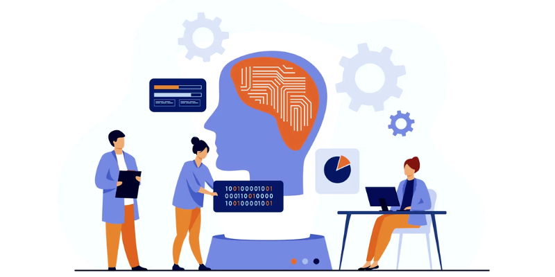

HOLMAR ALEXANDER LÓPEZ VÁSQUEZ
La representación del conocimiento es una de las áreas clave de la inteligencia artificial (IA) y se refiere a cómo se almacena y procesa el conocimiento en un sistema computarizado. En la actualidad, la IA se ha expandido a diversas áreas, como la visión por computadora, el procesamiento del lenguaje natural, el aprendizaje automático y la robótica, entre otros. La Representación del Conocimiento se ocupa de cómo las máquinas pueden adquirir, almacenar y utilizar conocimiento para resolver problemas de forma efectiva. El objetivo es proporcionar a las máquinas la capacidad de razonamiento que nos permita entender el mundo y tomar decisiones de manera más informada.
.jpg)
En la actualidad, la IA se encuentra en pleno auge y está presente en muchos aspectos de nuestra vida diaria, como en los asistentes virtuales, sistemas de reconocimiento facial, chatbots, sistemas de recomendación y en la toma de decisiones empresariales. La IA se basa en la capacidad de las máquinas para aprender de la experiencia y mejorar su rendimiento a través del tiempo. la Representación del Conocimiento es una parte fundamental de la IA, que se ocupa de cómo representar el conocimiento en un formato que pueda ser utilizado por las máquinas. La IA se encuentra en pleno auge en la actualidad y se espera que tenga un gran impacto en muchos aspectos de nuestra vida diaria en el futuro. Se espera que la IA tenga un papel importante en el desarrollo de nuevas tecnologías y en la toma de decisiones, lo que puede llevar a una mejora en los resultados y una mejor toma de decisiones informadas.
.jpg)
La inteligencia artificial IA es una tecnología muy apreciada e innovadora que lleva la inteligencia humana al siguiente nivel, ofrece el poder de la inteligencia de máquina precisa e integrada, el reciente crecimiento del uso de sistemas y dispositivos basados en IA puede atribuirse a su eficacia y precisión a la hora de completar tareas difíciles. En la actualidad, la cuestión es que, a pesar de que los humanos han adquirido muchos tipos y niveles diferentes de conocimiento a lo largo de su vida, las máquinas tienen dificultades para comprender el mismo conocimiento. Por eso se recurre a la representación del conocimiento. De este modo se abordarán cuestiones complejas de nuestro mundo que suponen un reto y llevan mucho tiempo a los humanos. La representación del conocimiento encuentra su camino desde la psicología sobre cómo un ser humano es capaz de resolver problemas y representar el conocimiento para diseñar tener formalismos. Esto permitirá que la IA comprenda cómo un ser humano simplifica los sistemas complejos mientras construye y diseña. El trabajo más antiguo se centró en la resolución de problemas generales, que fue desarrollado por Herbert A. Simon y Allen Newell en 1959. Estos sistemas utilizaron la estructura de datos para la descomposición y la planificación. El sistema primero comienza con un objetivo y luego descompone el objetivo en subobjetivos. Posteriormente, el sistema establece unas estrategias constructivas que pueden atender cada subobjetivo.
Uno de los objetivos de la inteligencia artificial (IA1) es el desarrollo de técni- cas y métodos que permitan a un sistema informático resolver problemas de manera inteligente, es decir, teniendo en cuenta el contexto y la información disponible para alcanzar el objetivo deseado. Resolver este tipo de problemas puede requerir determinadas habilidades como la capacidad de aprender, de razonar o de planificar, entre otras
HOLMAR ALEXANDER LÓPEZ VÁSQUEZ